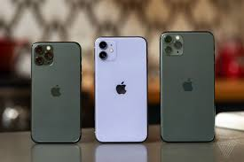

In the year of 2019 the iPhone 11, iPhone 11 Pro and the iPhone 11 Pro Max was released. The price of the iPhone 11 is 699 dollors. The price of the iPhone 11 Pro is 999 dollors. The price of the iPhone 11 Pro Max is 1,099 dollors. The camera has a wide and ultra wide lense. The front facing camera is now updated to 12 MP.
Source: Cameron Faulkner. The Verge. 2019. imobie.com. (https://www.imobie.com/support/difference-between-iphone-8-and-x.htm)